DUAL ACID
Two TB-303-style basslines. Harmonically linked patterns, independent lengths and an arpeggiator for each machine.

ACID RECALL_ SUPPORT THE SIGNALINDEPENDENT SOFTWARE // ACID TECHNO // 001
THE MACHINES NEVER DIED.
THEY JUST GOT REWIRED.
The spirit of ReBirth. Rewired for today.
A free, open-source music workstation built on OpenRB-338. Two acid basslines. An 808. A 909. Eight sample lanes. Your hands on the controls.
WINDOWS x64 // FREE STUDIO PREVIEW // GPL-3.0-ONLY
// 01 / TOOLKIT
Familiar machines. New possibilities.
An old-school workflow rebuilt
for today’s sessions.
Two TB-303-style basslines. Harmonically linked patterns, independent lengths and an arpeggiator for each machine.
Two classic rhythm machines with visible per-voice controls, independent output trims and their own groove generators.
Hands-on MIDI Learn, external controllers and portable mappings. Windows MIDI Clock IN / OUT keeps the machines connected.
WAV, AIFF and MP3. Up to 64 bars per lane. Trim, reverse, loop, gate and follow tempo with pitch-preserving Time Warp.
Generate Techno, IDM and Break patterns. Explore accents, slides and linked sequences. Undo and try another direction.
Sidechain, stereo convolution reverb, distortion, delay, PCF and compression. Save samples and impulse responses inside portable projects.
FEATURES DESCRIBE THE EVOLVING WINDOWS STUDIO PREVIEW. READ THE GUIDE AND CURRENT LIMITS ↗
// 02 / IN PLAIN SIGHT
A graphite rack. Every control in reach.
Click a view to get closer.
// 03 / ORIGIN SIGNAL
ReBirth was the first music software I ever installed. Years later, discovering OpenRB-338 brought that first spark back.
My friend Matth23 brought my old Evolution UC-33e MIDI controller back to life. I wanted knobs, faders and real hands-on control again. That simple MIDI experiment grew into ACID RECALL: linked basslines, arpeggiators, a sampler, FX, MIDI sync and a graphite rack.
ACID RECALL is a fork built on the engine and compatibility work of pingw33n and the OpenRB-338 contributors, the open-source reimplementation of ReBirth RB-338. Its additions take shape through musical experimentation and AI-assisted development.
Respect the roots. Rewire the future.
READ THE WHOLE STORY ↗// 04 / GET CONNECTED
Free to download. Open to explore.
Made to make noise.
// 05 / KEEP THE SIGNAL ALIVE
ACID RECALL is free and open-source. If you enjoy using it, consider supporting its continued development.
Every feature stays free. Donations are entirely optional.
BITCOIN // BITCOIN MAINNET · BTC
SOLANA // SOLANA MAINNET · SOL
DONATIONS ARE OPTIONAL. CRYPTO TRANSFERS ARE IRREVERSIBLE. DOUBLE-CHECK THE NETWORK AND ADDRESS.